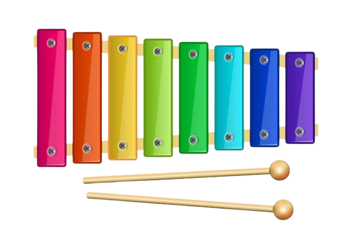

The xylophone (from Ancient Greek ξύλον (xúlon) 'wood', and φωνή (phōnḗ) 'sound, voice'; lit. sound of wood') is
a musical instrument in the percussion family that consists of wooden bars struck by mallets. Like the glockenspiel
(which uses metal bars), the xylophone essentially consists of a set of tuned wooden keys arranged in the fashion of the
keyboard of a piano. Each bar is an idiophone tuned to a pitch of a musical scale, whether pentatonic or heptatonic in
the case of many African and Asian instruments, diatonic in many western children's instruments, or chromatic for
orchestral use.
The term xylophone may be used generally, to include all such instruments such as the marimba, balafon and even the
semantron. However, in the orchestra, the term xylophone refers specifically to a chromatic instrument of somewhat
higher pitch range and drier timbre than the marimba, and these two instruments should not be confused. A person who
plays the xylophone is known as a xylophonist or simply a xylophone player.
The term is also popularly used to refer to similar instruments of the lithophone and metallophone types. For example,
the Pixiphone and many similar toys described by the makers as xylophones have bars of metal rather than of wood, and so
are in organology regarded as glockenspiels rather than as xylophones.
|  | |
| Percussion instrument | |
|---|---|
| Classification | Percussion |
| Hornbostel-Sachs classification | 111.212 (Set of percussion sticks) |
| Developed | 9th century |
| Playing range | |
The modern western xylophone has bars of rosewood, padauk, cocobolo, or various synthetic materials such as fiberglass
or fiberglass-reinforced plastic which allows a louder sound. Some can be as small a range as 2 1/2 octaves but
concert xylophones are typically 3 1/2 or 4 octaves. Like the glockenspiel, the xylophone is a transposing instrument:
its parts are written one octave below the sounding notes.
Concert xylophones have tube resonators below the bars to enhance the tone and sustain. Frames are made of wood or cheap
steel tubing: more expensive xylophones feature height adjustment and more stability in the stand. In other music
cultures some versions have gourds that act as Helmholtz resonators. Others are "trough" xylophones with a single
hollow body that acts as a resonator for all the bars. Old methods consisted of arranging the bars on tied bundles of
straw, and, is still practiced today, placing the bars adjacent to each other in a ladder-like layout. Ancient mallets
were made of willow wood with spoon-like bowls on the beaten ends.
The instrument has obscure ancient origins. Nettl proposed that it originated in southeast Asia and came to Africa c. AD 500 when a group of Malayo-Polynesian speaking peoples migrated to Africa, and compared East African xylophone orchestras and Javanese and Balinese gamelan orchestras. This was more recently challenged by ethnomusicologist and linguist Roger Blench who posits an independent origin in of the Xylophone in Africa, citing, among the evidence for local invention, distinct features of African xylophones and the greater variety of xylophone types and proto-xylophone-like instruments in Africa.
Many music educators use xylophones as a classroom resource to assist children's musical development. One method noted
for its use of xylophones is Orff-Schulwerk, which combines the use of instruments, movement, singing and speech to
develop children's musical abilities. Xylophones used in American general music classrooms are smaller, at about
1 1/2 octaves, than the 2 1/2 or more octave range of performance xylophones. The bass xylophone ranges are written from
middle C to A an octave higher but sound one octave lower than written. The alto ranges are written from middle C to A
an octave higher and sound as written. The soprano ranges are written from middle C to A an octave higher but sound one
octave higher than written.
According to Andrew Tracey, marimbas were introduced to Zimbabwe in 1960. Zimbabwean marimba based upon Shona music
has also become popular in the West, which adopted the original use of these instruments to play transcriptions of mbira
dzavadzimu (as well as nyunga nyunga and matepe) music. The first of these transcriptions had originally been used for
music education in Zimbabwe. Zimbabwean instruments are often in a diatonic C major scale, which allows them to be
played with a 'western-tuned' mbira (G nyamaropa), sometimes with an added F♯ key placed inline.
Charmie Weerapperuma 2024 | © All Rights Reserved